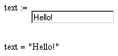
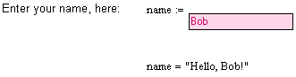

Mathsoft TextBox Control |
| Overview |
The Mathsoft TextBox control allows you to accept user input in the form of text, which can then be used as string or number data for calculations. You modify the behavior of the control on input, and the resulting output, through a script in the Exec event using the TextBox class. You change the appearance of a text box using the Properties dialog box.
| Simple Annotated Example |
Here’s an example that shows the default script and the resulting behavior of the TextBox control in the worksheet.
(right-click on the text box and choose Edit Script)
Sub TextBoxEvent_Start()
Rem TODO: Add your code here
End Sub
Sub TextBoxEvent_Exec(Inputs,Outputs)
Outputs(0).Value = TextBox.Text
End Sub
Sub TextBoxEvent_Stop()
Rem TODO: Add your code here
End Sub

In the script, notice three events, Start, Exec, and Stop. Since this text box control merely takes what is entered and returns it as output, there is no code in either the Start or Stop events. All action associated with processing user entries in the text box itself should be written in the Exec event, including parsing text, converting the data type or any other processes.
Some formatting can be scripted in the Start event, some requires right-clicking and choosing Properties. Font-related properties are only available through the Properties dialog box. Here’s a slightly modified piece of script and a picture that shows its effect on the appearance and behavior of the control.
Sub TextBoxEvent_Start()
TextBox.ClientEdge = False
TextBox.Border = True
TextBox.BackColor = RGB(255,210,230)
TextBox.ForeColor = RGB(200,0,100)
End Sub
Sub TextBoxEvent_Exec(Inputs,Outputs)
Outputs(0).Value = "Hello, " + TextBox.Text + "!"
End Sub
Sub TextBoxEvent_Stop()
Rem TODO: Add your code here
End Sub

Note that you can only change font settings for the TextBox control using the Properties dialog box. Font-related properties are not available through the script.